Hardware assembly
Please read and follow these instructions carefully. Careful inspection of the photos and videos is crucial for creating a reproducible and precise environment.
Environment Overview
The benchmark comprises of the components listed in Table A.1. The cameras, after calibration, handle RGB observation, while the SO-101 follower arm executes manipulation tasks.

Camera mount assembly
Top D455 mount
- Print two snap-hooks ("Part 1") and one backplate ("Part 2") from here.
-
Screw and attach one snap-hook (Part 1) to the backplate using one M3×6mm screw. Repeat for the second hook. This assembled mount is referred to as Part 3. attach figure 2
-
Screw Part 3 onto the rear mounting/screw holes of the D455 with two M4×6 mm screws.
- Add rubber grip tape inside each hook to prevent sliding on the PVC pipe. Do not over-tighten the screws or apply excessive force to the hooks, as they may snap.
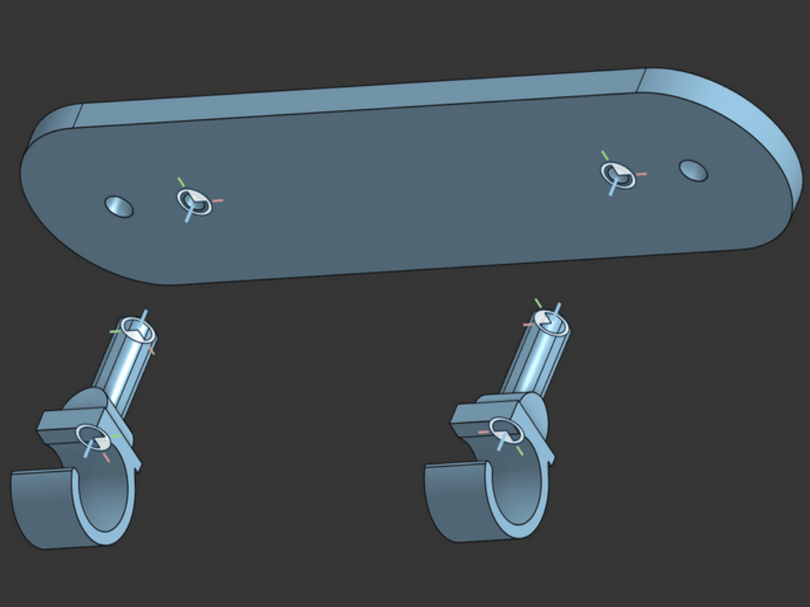
(a) Snap-hooks attached to back-plate (Part 3).
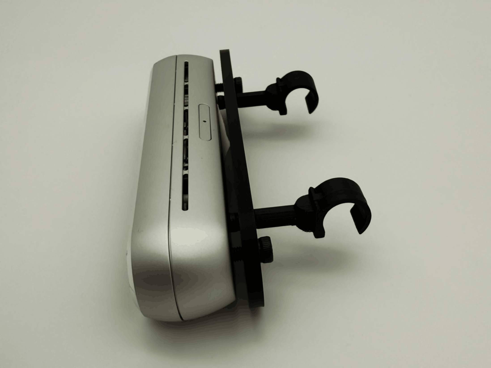
(b) Part 3 screwed to D455 camera.
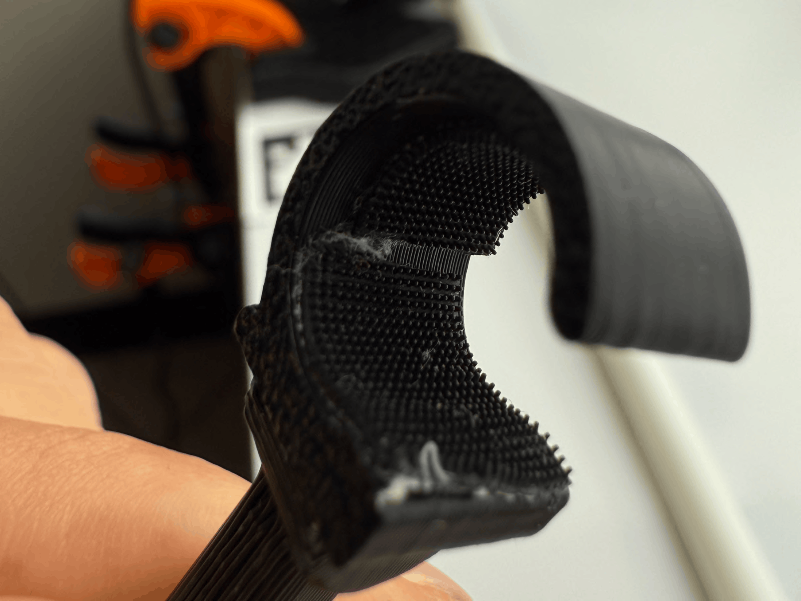
(c) Rubber grip tape on inside of hooks.
Note: Note: the CAD file for the snap-hook has an inner diameter that matches the outer diameter of the PVC pipe for the Glendan light box. Other light boxes may have different PVC diameters and may equire manual re-CAD.
Wrist webcam mount
- If applicable (i.e. the SO-101 arm did not come pre-assembled), follow Lerobot's SO-101 documentation page to assemble the SO-101 Follower arm. Don't calibrate the assembled SO-101 just yet.
- Refer to TheRobotStudio's page to print and set up the wrist camera mount with the Vinmoog webcam. *_What sizes screws are needed?
- Attach the wrist mount to the end-effector of the SO-101 with one M3×12mm screw and nut (You have to take the gripper servo out of the end-effector to be abel to place a nut there).
- Secure the webcam and verify that the view is stable during arm motion.
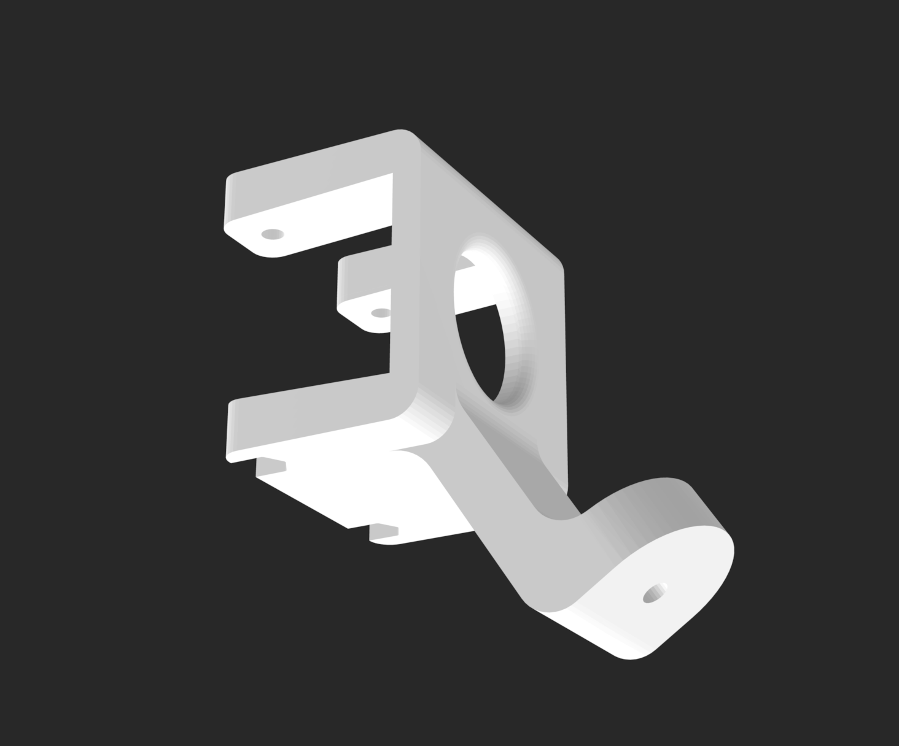
(a) Wrist camera mount file.
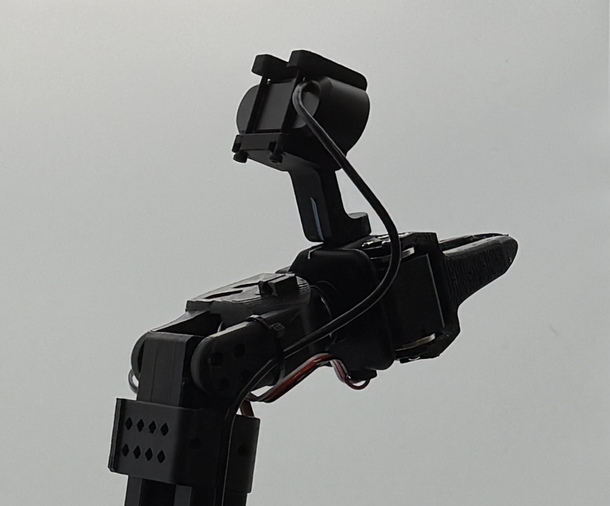
(b) Wrist camera mounted onto SO-101 end-effector.
Light box assembly
A controlled environment with consistent lighting and a clutter-free background is essential for consistent visual observations across laboratory settings. To do this, we set up a 32×32 in. Glendan light box (link) at the edge of a work table.
Box Coordinates/Orientation Conventions
Before assembly, read the orientation convention below. We refer to faces of the light box with a coordinate system:
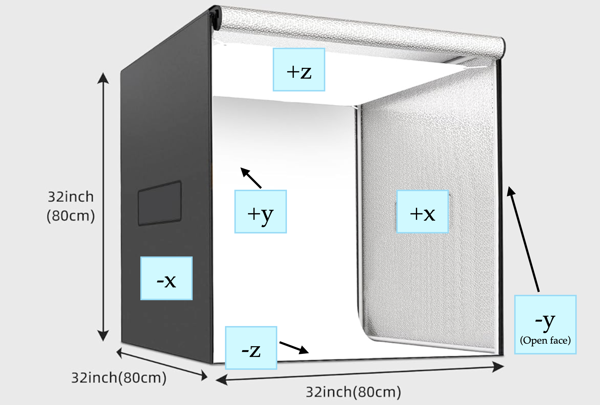
-
−y: open face of the box (with full-length zippers). When unzipped, the box tarp should open upwards. The SO-101 arm is mounted near this face, pointing into the box (+y direction)
-
+z: top face (round hole for the top camera);
-
−z: bottom face (workspace where objects are placed); SO-101 arm mounted on this face.
-
±x: side faces (removable Velcro panels).
- During data capture and policy evaluation, the top camera is zoomed in by 1.5x and cropped to 680×480p, so that it cannot view the panels if they are removed (Refer to reference images TODO FILL LINK). Additionally, the box is lit up well enough so that the outside of the panels is completely dark from the camera exposure difference.
- In our methods, we keep the −x face on the box and remove the +x face Velcro panel in order to switch out objects during data capture and policy evaluation.
-
The front-view camera is mounted on the internal edge where the +z and +y faces intersect.
Assembly Steps
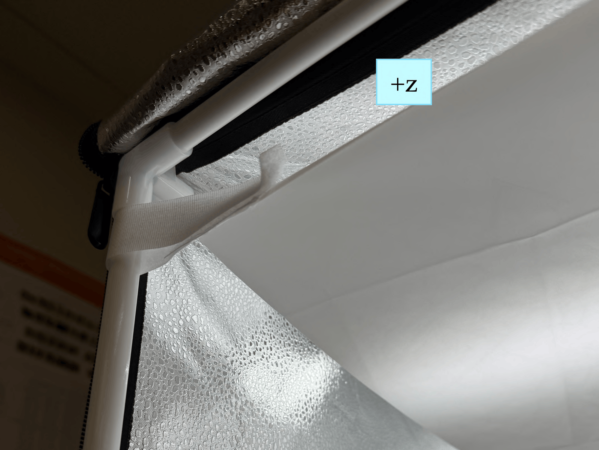
(a) Diffuser sheet
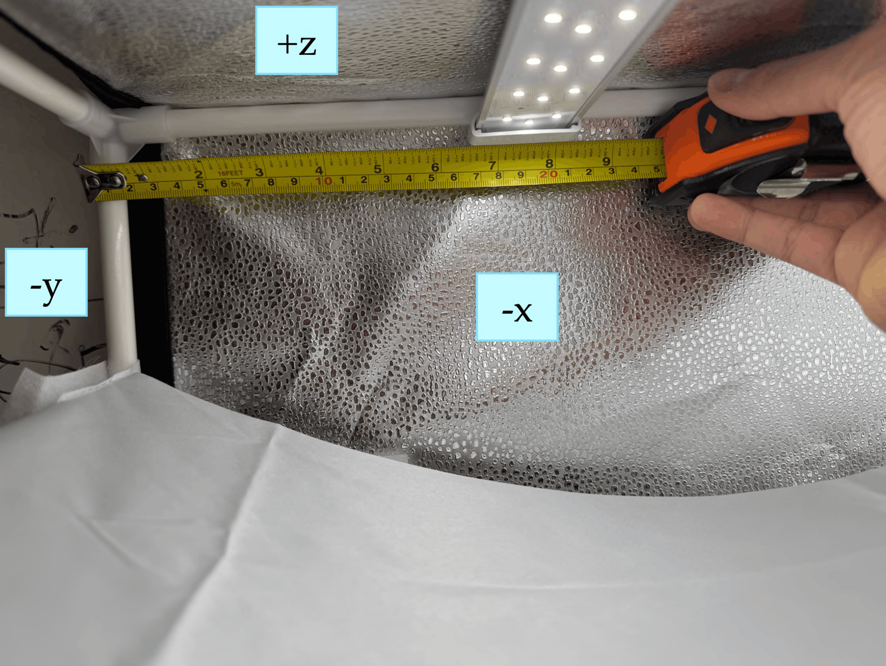
(b) LED panel position example
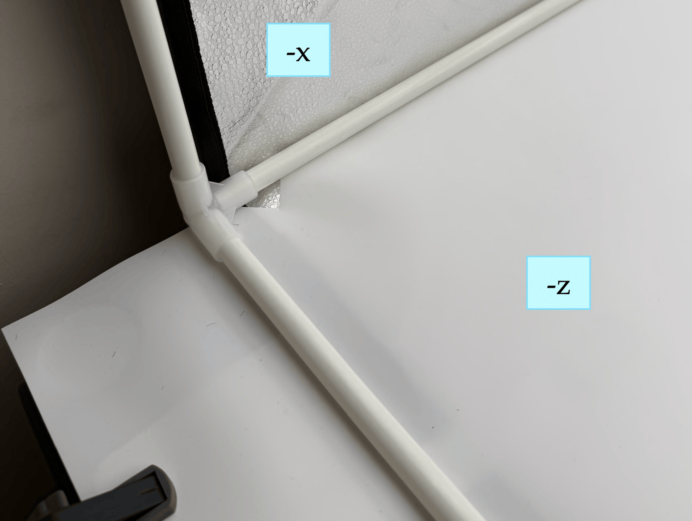
(c) Background sheet
-
Construct the cube-shaped PVC frame using the 12 pipes and 8 edge connectors supplied with the Glendan kit. Do not attach the zipper tarp yet; complete all internal installations first.
-
Attach the white light diffuser sheet to the top (+z) face using the supplied velcro strips. Secure the sheet using the velcro strips on both the −y and +y pipes, as close as possible to the +z face (refer to (a)).
-
Attach the provided white hooks onto the LED panels and then mount the three LED panels on the PVC frame before fitting the tarp (refer to (b)):
- LED Panel 1: +z face, pointed downward toward −z; center ≈ 7.5 inches from the −y face.
- LED Panel 2: +z face, pointed downward toward −z; center ≈ 7.5 inches from the +y face (mirror image of Strip 1).
- LED Panel 3: +y face, pointed toward −y; center ≈ 8 inches from the +z face.
- Note: Connect the power cables of each LED panel to the LED power supply after putting the tarp on the box frame in the next step. Feed cables through the small hole in the tarp near the top of the −x or +x faces.
At the end of step 3, your box should look something like this:
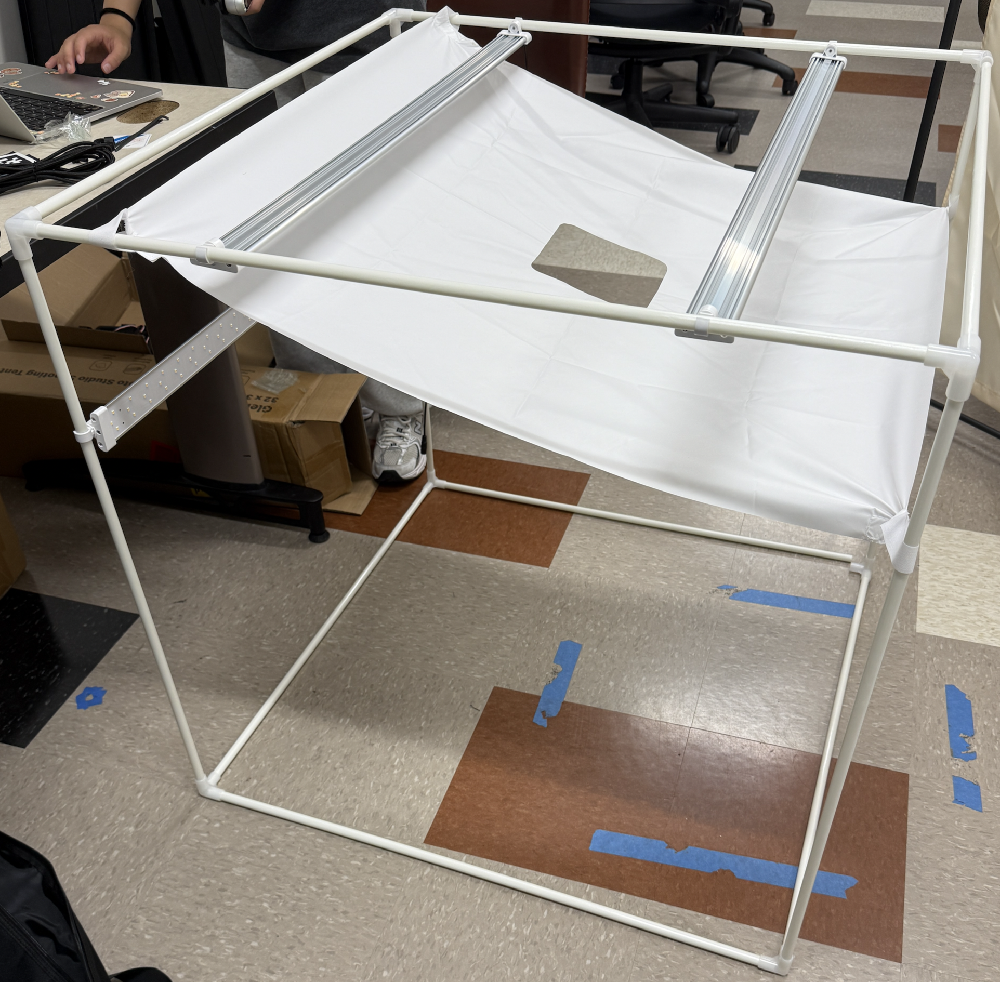
-
Mount the front-view camera on the PVC frame:
- Connect the USB-C cable to the RealSense camera. (Note: feed the computer-side of the cable through the small hole in the tarp near the top of the −x or +x faces after the tarp is placed over the frame in the next step).
- Snap the camera mount hooks onto the PVC pipe at the junction of the +z and +y inner faces.
- Position the camera’s midpoint ≈ 17 inches from the −x face. The camera angle should be approximately −50° to −60° from horizontal; fine calibration is performed later.
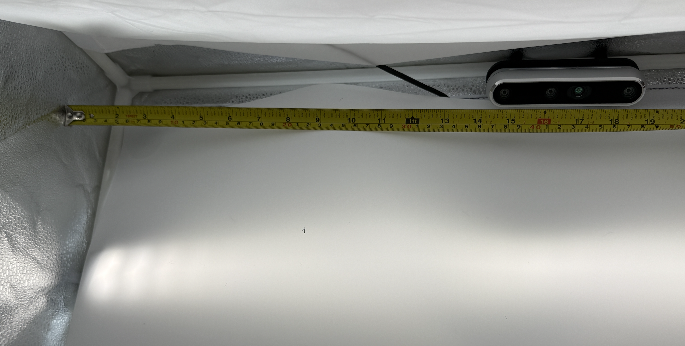
Top camera mounted on the pipe between +z and +y, about 17 inches from the -x face. -
Slide the zipper tarp over the completed PVC/LED frame, ensuring that the −y face of the frame matches the side of the tarp with the zippers. Ensure that the −z side (the object workspace) is actually on the bottom.
- Put the velcro-lined box covers onto the sides of the box if needed (i.e. if you are not going to reach into that side to adjust the objects).
-
Clamp the overhanging sheet so the workspace stays flat. Attach the white PP background sheet to the inner +y face using the velcro strips on the tarp and the sheet (refer to (c)).
- Tuck the sheet under the −z PVC pipes so that the workspace is as flat as possible. Fold the sides of the sheet under the pipes if necessary to flatten the −z workspace.
- If the sheet bunches near the −y face, cut a small triangular slit near the −y edge to relieve the tension.
- The sheet should extend ≈ 3.5 inches beyond the −y open face of the box.
- Clamp the overhanging portion of the sheet to the table on both sides.
After step 6, your box should look like this (minus the mounted SO-101 arm and AprilTag):
Before the next step, ensure that:
- LED panels are positioned as specified; all power connections are secure; the lights can be turned on to the maximum brightness (around 5600K).
- The diffuser sheet is taut with no visible sag.
- The background sheet is flat against the workspace; no curves or wrinkles are visible from the camera view.
- The zipper tarp fully covers all PVC pipes and LED wiring.
SO-101 arm mounting and AprilTag placement
Now, we mount the SO-101 arm to the table.
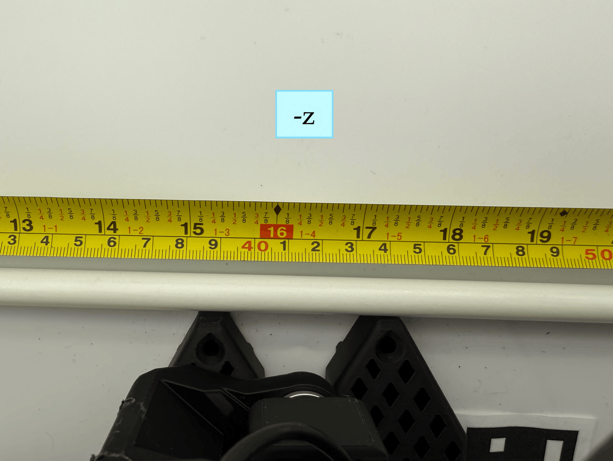
(a) SO-101 arm clamped to table. Center of base is 16.5 inches the -x face.
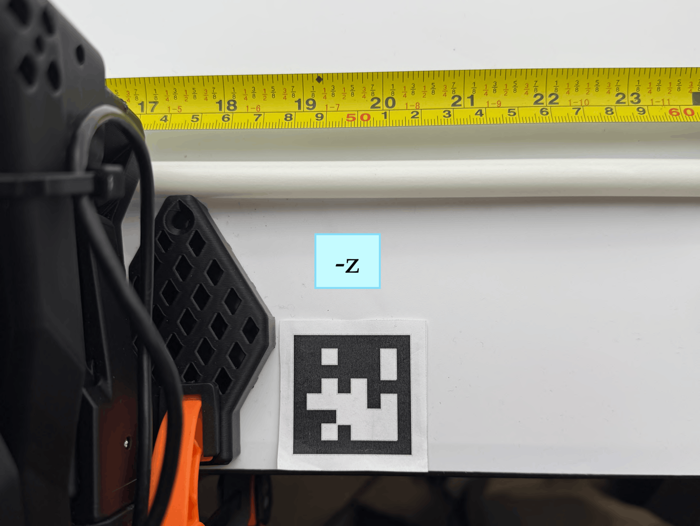
(b) AprilTag aligned with the base edges.
-
Clamp both sides of the SO-101 follower arm to the edge of the table so that the front edge of its base touches the PVC pipe running between the −z and −y faces of the box (refer to (a) above).
-
Power on the SO-101 arm by inserting the 12V power adaptor into the SO-101's motor controller board on the base of the arm.
- Place the 4cm AprilTag on the right side of the SO-101 base (refer to (b) above):
- The northwest corner of the tag must touch the vertical edge of the SO-101 base.
- The south black border of the tag must be aligned with the bottom edge of the SO-101 base.
- Double-check the tag orientation. Wrinkled paper (i.e. for the AprilTag causes unreliable detection; affix it flat using double-sided tape on all four corners.)
Before the next step, ensure that:
- The SO-101 base center is 16.5 inch from the −x box face.
- The base front edge is flush against the −z/−y PVC pipe.
- The AprilTag northwest corner touches the vertical edge of the base; the south border aligns with the base bottom edge.
- The tag is flat with no wrinkles or lifted corners.
After mounting the arm and the AprilTag, your box should look like this:
Next Step: Software Installation ➜